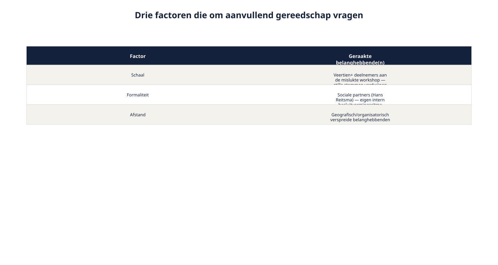
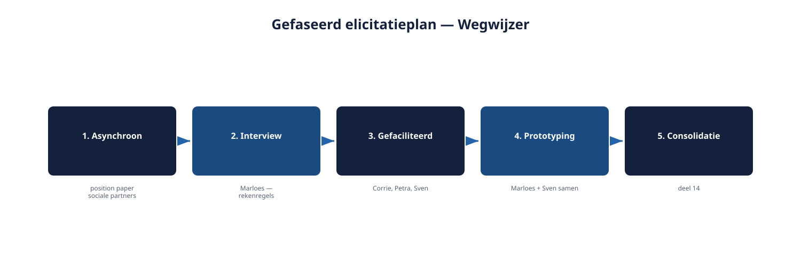

Deel 13 — Elicitation: techniekkeuze op programmaniveau
Reader · Ductus-cursus Requirements engineering · niveau 2 (professional) · deel 13 van 22
Cursus Requirements Engineering — Ductus. Deze cursus bereidt voor op de CPRE-certificering van IREB en is uitdrukkelijk geen vervanging van het officiële syllabus- en examenmateriaal.
Leerdoelen
Na dit deel kun je:
- herkennen wanneer de vier basistechnieken uit niveau 1 niet meer volstaan, en waarom;
- aanvullende technieken toepassen: gefaciliteerde grote-groepssessies, asynchrone consultatie, gefaseerde raadpleging, en prototyping voor complexe inhoud;
- een techniekkeuze maken op basis van groepsgrootte, formaliteit, benodigde mate van consensus, tijdsdruk en inhoudelijke complexiteit;
- een gefaseerd elicitatieplan opstellen dat meerdere technieken combineert;
- de techniekkeuze aanpassen aan het tempo van een belanghebbendengroep, in plaats van andersom.
13.1 De workshop die een ramp werd
Ruben plant, met de stakeholderkaart uit deel 12 in de hand, een enkele workshop met alle belangrijke belanghebbenden tegelijk — precies zoals hij dat bij het Nabestaandenloket met Wilma en Faisal deed. Het loopt mis. Veertien deelnemers, waarvan de helft nauwelijks aan het woord komt. Hans Reitsma kan ter plekke niets toezeggen namens de sociale partners — hij moet terugkoppelen naar zijn eigen gremium, dat pas over drie weken weer bijeenkomt. Marloes en Sven verzanden in een welbekend welles-nietes over nauwkeurigheid versus eenvoud, zonder dat er tijd is om er structureel mee om te gaan. Aan het eind van de workshop heeft Ruben meer vragen dan antwoorden, en drie belanghebbenden voelen zich niet gehoord.
De les is niet dat workshops niet werken. De les is dat één techniek voor iedereen tegelijk — die bij het Nabestaandenloket goed werkte — op deze schaal, met deze diversiteit aan mandaat en tempo, niet meer volstaat.
13.2 Wanneer niveau-1-technieken niet meer volstaan
Drie factoren maken dat de vier basistechnieken uit deel 4 (interview, workshop, documentanalyse, observatie) op zichzelf tekortschieten op programmaniveau.
Schaal. Een workshop werkt goed met vier tot acht deelnemers. Met veertien of meer wordt de dynamiek onbeheersbaar: stille stemmen verdwijnen nog sterker (deel 4, al genoemd als zwakte van de workshop), en de tijd per belanghebbende daalt tot bijna niets.
Formaliteit. Sommige belanghebbenden — met name groepen met een intern mandaatproces, zoals de sociale partners — kunnen niet ad-hoc, ter plekke, iets toezeggen. Hun tempo wordt bepaald door hun eigen interne besluitvormingsritme, niet door de planning van het Wegwijzer-team.
Afstand. Belanghebbenden kunnen geografisch of organisatorisch verspreid zijn, met beperkte gezamenlijke beschikbaarheid. Dat maakt een enkele, synchrone sessie voor iedereen tegelijk soms praktisch onmogelijk, los van de vraag of het inhoudelijk wenselijk zou zijn.

Geen van deze drie factoren maakt de niveau-1-technieken overbodig. Ze maken duidelijk dat er aanvullend gereedschap nodig is om ze op deze schaal effectief in te zetten.
13.3 Vier aanvullende technieken
Gefaciliteerde grote-groepssessie
Voor het ophalen van brede input van een grotere groep zonder dat de sessie in chaos verzandt: een externe of onafhankelijke facilitator leidt de sessie met een vaste structuur — bijvoorbeeld eerst individueel en stil ideeën noteren, dan in kleine subgroepjes clusteren (affinity mapping), pas daarna plenair bespreken. Dit voorkomt dat de eerste, hardste stem de hele sessie kleurt.
Wanneer geschikt: een grote, redelijk gelijkwaardige groep (bijvoorbeeld een brede groep medewerkers van de servicedesk die met Wegwijzer gaan werken) waarbij je juist de breedte van meningen wilt, niet slechts een paar dominante stemmen.
Asynchrone consultatie
Voor belanghebbenden die tijd nodig hebben om intern te overleggen, of die geografisch verspreid zijn: een schriftelijk verzoek om input, met een duidelijke vraag en een redelijke deadline — bijvoorbeeld een position paper opvragen bij de sociale partners in plaats van te verwachten dat Hans Reitsma ter plekke antwoord geeft.
Wanneer geschikt: formele groepen met een eigen intern besluitvormingsritme, of situaties waarin gelijktijdige beschikbaarheid niet haalbaar is.
Gefaseerde raadpleging
Voor onderwerpen waar de meningen sterk uiteenlopen en een directe groepssessie het risico loopt dat de zwakste of minst zekere stem wordt overstemd: eerst individueel, onafhankelijk van elkaar, standpunten ophalen; deze geanonimiseerd terugkoppelen aan de hele groep; een tweede ronde waarin iedereen, met kennis van de andere standpunten, zijn positie kan bijstellen; herhalen tot de meningen convergeren of de resterende verschillen duidelijk en beargumenteerd zijn.
Wanneer geschikt: onderwerpen met een reëel risico op groepsdruk of hiërarchie-effecten — bijvoorbeeld wanneer junior medewerkers naast senior actuarissen aan tafel zitten en hun mening anders zouden inslikken in een directe sessie.
Prototyping en simulatie
Voor complexe inhoud die moeilijk in woorden alleen te bespreken is: een interactief, snel gebouwd prototype van (een deel van) Wegwijzer voorleggen, en belanghebbenden er samen doorheen laten lopen. Dit dwingt misverstanden vroeg naar boven — precies zoals een mockup in deel 4 en 9 van niveau 1 werd gebruikt om te valideren, nu ingezet als elicitatietechniek voor onderwerpen die zich lastig laten verwoorden.
Wanneer geschikt: de interactie tussen actuariële nauwkeurigheid en begrijpelijke presentatie — precies het onderwerp waar Marloes en Sven structureel over botsen. Een prototype laat beiden concreet zien wat een gekozen aanpak in de praktijk betekent, in plaats van erover te blijven praten in abstracte termen.

13.4 Een techniekkeuze maken
Vijf factoren bepalen, net als bij de RE-strategie in deel 11, welke techniek — of combinatie van technieken — passend is.
| Factor | Vraag |
|---|---|
| Groepsgrootte | Hoeveel mensen zijn relevant voor dit onderwerp? |
| Formaliteit/mandaat | Kan deze groep ter plekke iets toezeggen, of is er een eigen besluitvormingsritme? |
| Benodigde consensus | Moet iedereen het eens worden, of is een overzicht van posities voldoende? |
| Tijdsdruk | Hoeveel tijd is er, en hoe verhoudt die zich tot het ritme van de belanghebbenden? |
| Inhoudelijke complexiteit | Is dit onderwerp in woorden te bespreken, of vraagt het een concreter hulpmiddel? |
Geen van deze factoren wijst automatisch naar één techniek. Ze werken als een profiel: een onderwerp met veel belanghebbenden, hoge formaliteit en hoge complexiteit (zoals het uiteindelijke aantal risicoprofielen) vraagt om een combinatie — niet om één perfecte techniek.
13.5 Een gefaseerd elicitatieplan voor Wegwijzer
Met het gereedschap uit paragraaf 13.3 en 13.4 is een concreter plan te schetsen dan de hoofdlijnen uit deel 11.
Fase 1 — Asynchrone consultatie. Een schriftelijk verzoek aan de sociale partners voor een position paper over de gewenste kaders (aantal profielen, mate van keuzevrijheid), met een deadline die aansluit op hun eigen overlegritme.
Fase 2 — Individueel interview. Met Marloes, om de rekenregels achter risicoprofiel en scenario's grondig op te halen (deel 4, niveau 1) — een onderwerp dat te technisch is voor een brede sessie.
Fase 3 — Gefaciliteerde sessie met deelnemersraad, compliance en UX. Corrie, Petra en Sven samen, met een facilitator, om begrijpelijkheid en zorgplicht in samenhang te bespreken — een kleinere, meer gelijkwaardige groep dan de mislukte sessie uit paragraaf 13.1.
Fase 4 — Prototyping-sessie met Marloes en Sven samen. Een concreet prototype van de risicoprofiel-uitleg, om hun structurele spanning (deel 12) tastbaar te maken in plaats van abstract te bespreken.
Fase 5 — Consolidatie. Waar deel 14 over gaat: alle input uit de voorgaande fasen samenbrengen.

Merk op dat dit plan geen van de belanghebbenden dwingt tot een tempo dat niet bij hen past — de sociale partners krijgen asynchrone tijd, het ontwikkelteam kan ondertussen doorwerken aan andere onderdelen. Dit is de eerste concrete uitwerking van spanningsveld 4 (twee kloksnelheden) uit deel 11, ruim vóór deel 21 daar dieper op ingaat.
Wat verandert er als je iteratief werkt?
Niet elke aanvullende techniek past in elke sprintcyclus. Een gefaciliteerde grote-groepssessie of een gefaseerde raadpleging kost voorbereidingstijd en logistiek die zich beter lenen voor vaste momenten — bijvoorbeeld bij een release-mijlpaal — dan voor elke sprint opnieuw. Lichtere technieken (een kort interview, een snelle asynchrone check) passen wél in een sprintritme. Een goede techniekkeuze op programmaniveau onderscheidt daarom niet alleen wélke techniek, maar ook op wélk soort moment: continu en licht versus periodiek en zwaar.
Samenvatting
- Drie factoren maken dat de niveau-1-technieken niet meer volstaan: schaal, formaliteit, afstand.
- Vier aanvullende technieken: gefaciliteerde grote-groepssessie, asynchrone consultatie, gefaseerde raadpleging, prototyping en simulatie.
- Vijf factoren bepalen de techniekkeuze: groepsgrootte, formaliteit/mandaat, benodigde consensus, tijdsdruk, inhoudelijke complexiteit — als profiel, niet als beslisboom met één uitkomst.
- Een gefaseerd elicitatieplan combineert technieken en past zich aan het tempo van elke belanghebbendengroep aan, in plaats van één tempo op te leggen.
- Zware technieken passen bij vaste, periodieke momenten; lichte technieken passen in een doorlopend sprintritme.
Begrippen
gefaciliteerde grote-groepssessie · asynchrone consultatie · gefaseerde raadpleging · prototyping · elicitatieplan
Leeswijzer naar het volgende deel
Deel 14 sluit de Elicitation-module af met consolidatie en conflicthantering: hoe je de input uit al deze technieken samenbrengt tot één samenhangend, gedragen geheel.